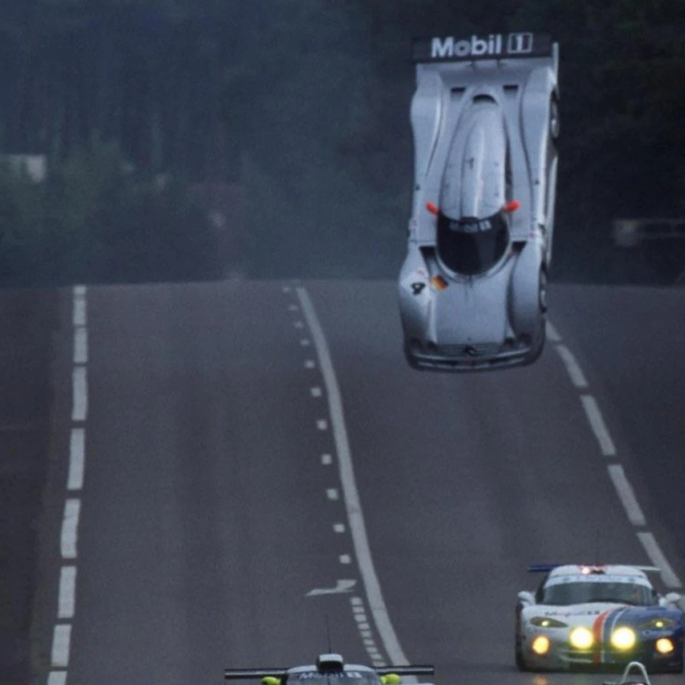

Les 24h du mans c'est quoi ?
Les 24 Heures du Mans, souvent simplement appelées "Le Mans," sont l'une des courses d'endurance
automobile les plus prestigieuses au monde. Cette épreuve légendaire se déroule sur le Circuit de la
Sarthe, en France, et est célèbre pour sa durée de 24 heures, mettant à l'épreuve la fiabilité des
véhicules, la stratégie des équipes et la résistance des pilotes. Chaque année, cet événement
emblématique attire des concurrents, des constructeurs automobiles de renom, et des passionnés de
sport
automobile du monde entier. Les 24 Heures du Mans sont bien plus qu'une simple course, elles
incarnent
une tradition et une vitrine pour l'innovation technologique, offrant une expérience inoubliable
pour
les amateurs de sport automobile.
L'histoire du mans
L'histoire des 24 Heures du Mans est riche en légendes et en exploits automobiles. Cette course
d'endurance emblématique a vu le jour en 1923, sur le célèbre Circuit de la Sarthe, en France.
Depuis lors, elle est devenue un pilier du sport automobile mondial. Les 24 Heures du Mans sont
célèbres pour leur durée exceptionnelle, mettant à l'épreuve la fiabilité des voitures et
l'endurance des pilotes.
L'épreuve a connu des évolutions majeures au fil des décennies, avec des voitures de plus en plus
puissantes, des innovations technologiques, et une concurrence féroce entre les constructeurs et les
équipes. Les années 1960 et 1970 ont été marquées par des duels épiques entre Ford et Ferrari,
immortalisés dans le film "Le Mans," avec Steve McQueen.
Aujourd'hui, les 24 Heures du Mans continuent d'attirer les constructeurs automobiles de renom, les
équipes d'endurance de premier plan, et les pilotes d'exception. La course est également le
troisième volet de la "Triple Couronne du Sport Automobile," aux côtés du Grand Prix de Monaco de
Formule 1 et des 500 Miles d'Indianapolis. Elle reste un événement incontournable pour les amateurs
de sport automobile, une vitrine pour l'innovation technologique, et un lieu où les champions
écrivent leur nom dans l'histoire du sport automobile.
Les principaux évenements au mans

L'histoire des 24 Heures du Mans est jalonnée d'événements mémorables, certains tragiques, d'autres
surprenants. En 1955, un accident fatal a bouleversé la course, entraînant des réformes majeures en
matière de sécurité. En 1967, la victoire de la Ford GT40 a été marquée par la tradition de célébrer
en buvant du champagne directement sur le podium.
En 1999, la course a connu un moment incroyable lorsque la Toyota n°1 est partie des stands pour
remporter la victoire. En 2011, la Porsche 911 GT3 Hybrid a suscité l'admiration en introduisant la
technologie hybride dans la course. En 2016, la victoire de la Ford GT, cinquante ans après son
triplé historique, a été un moment émotionnel marquant.
Parmi les événements insolites, l'envol de la Mercedes CLR sur la ligne droite en 1999 est resté
gravé dans les mémoires, soulignant les défis techniques et les risques que présentent les voitures
de course à haute vitesse. Ces moments, tragiques ou excentriques, font partie intégrante de
l'histoire riche et variée des 24 Heures du Mans.
Le mans un lieu d'innovation
Les 24 Heures du Mans ont toujours été un terrain d'innovation pour l'industrie automobile, et l'une
des avancées les plus emblématiques qui en est issue est l'introduction des freins à disque. En
1953, la Jaguar C-Type équipée de freins à disque a fait sa première apparition dans la compétition,
marquant un tournant dans l'histoire de la course automobile.
Les freins à disque se sont rapidement révélés plus efficaces et plus fiables que les freins à
tambour traditionnels. Ils ont permis aux voitures de ralentir plus rapidement et de manière plus
constante, améliorant ainsi la sécurité des pilotes et des spectateurs. Cette innovation a
rapidement gagné en popularité, et elle est devenue la norme dans l'industrie automobile, de la
course sur circuit aux voitures de tous les jours.
Le Mans a donc été le catalyseur de cette avancée technologique majeure, démontrant comment la
compétition automobile peut contribuer à façonner l'avenir de l'automobile. Aujourd'hui, les freins
à disque sont omniprésents sur nos routes, et ils sont le reflet de l'héritage innovant des 24
Heures du Mans en matière de technologie automobile.
Pour plus de précision vous pouvez regarder la vidéo de la chaine youtube Vilebrequin sur le sujet avec
d'autre information supplémentaire dans leur vidéo
| Année | Équipe Gagnante | Nombre de Tours | Distance Parcourue (en km) | Record du Tour |
|---|---|---|---|---|
| 2019 | Toyota Gazoo Racing | 385 | 5,352.812 | 3:18.331 |
| 2018 | Toyota Gazoo Racing | 388 | 5,286.823 | 3:17.658 |
| 2017 | Porsche Team | 367 | 5,002.3 | 3:17.475 |
| 2016 | Porsche Team | 384 | 5,233.5 | 3:21.375 |
| 2015 | Porsche Team | 395 | 5,382.2 | 3:21.067 |
| 2014 | Audi Sport Team Joest | 379 | 5,169.3 | 3:22.746 |
| 2013 | Audi Sport Team Joest | 348 | 4,740.6 | 3:22.567 |
| 2012 | Audi Sport Team Joest | 378 | 5,151.6 | 3:25.289 |
| 2011 | Audi Sport Team Joest | 355 | 4,834.6 | 3:27.204 |
| 2010 | Audi Sport Team Joest | 397 | 5,410.7 | 3:19.074 |